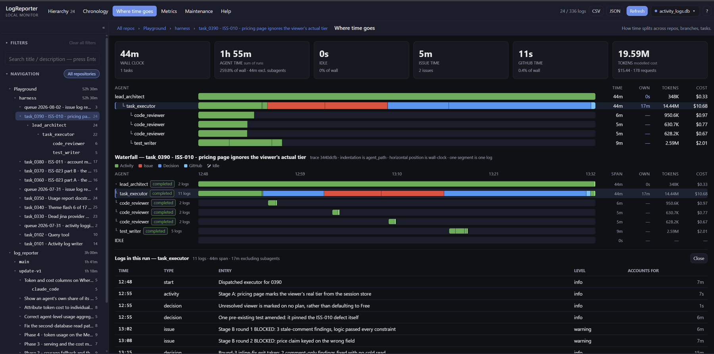
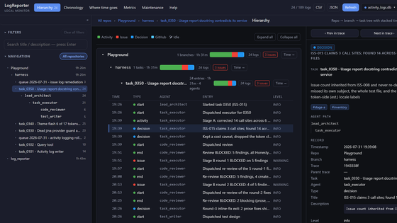
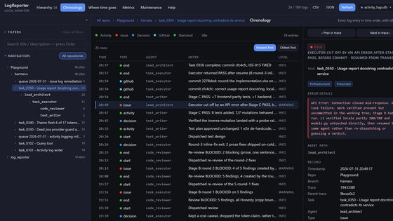
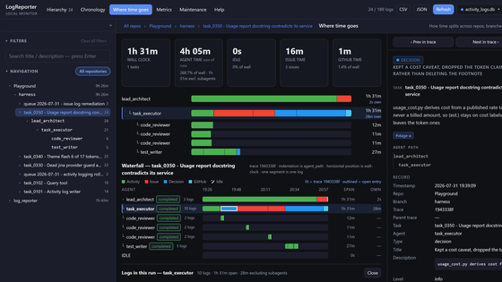
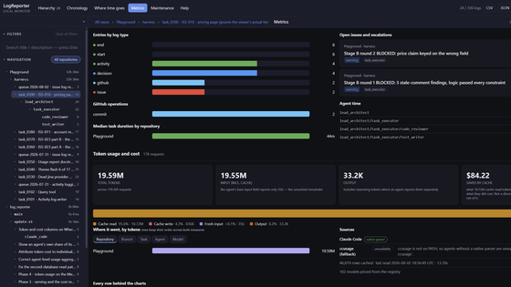
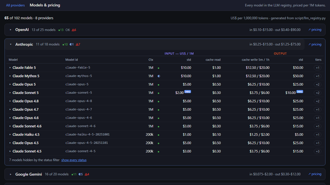
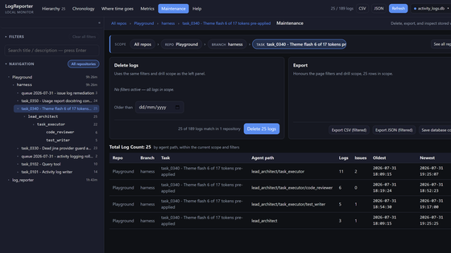
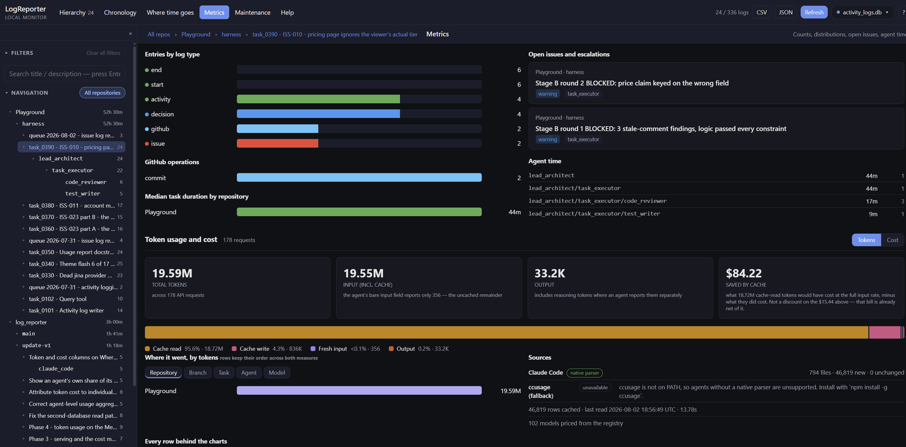
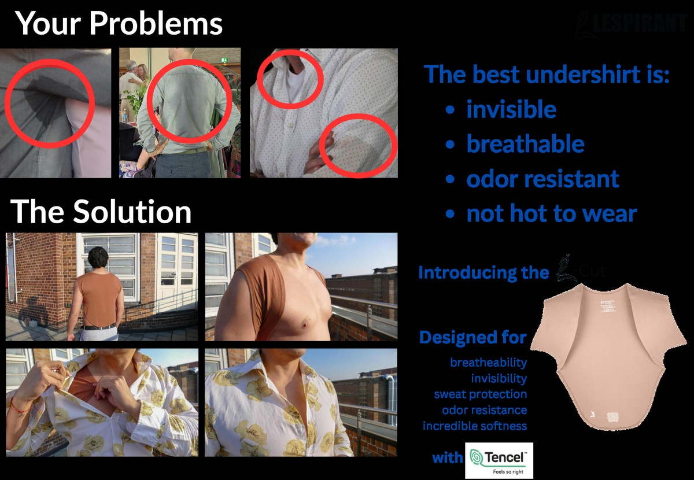

See what your subagents actually did
— and what it cost
Most tools watch your agents work. This one just asks them.
A local dashboard over a single SQLite file. Your agents append one row per meaningful step as they work — decisions, blockers, git operations — and the dashboard turns that into a subagent tree, an honest time breakdown, and per-agent token cost.
One screen, annotated

- 1Agent time is 259.8% of wall clock. Five agents ran in parallel. A clock alone can never show you that.
- 2An
OWNcolumn. A parent's span minus its subagents' runs — 44m elapsed, 17m actually its own. - 3Tokens and cost per agent.
task_executorburned 14.44M tokens and $10.68 of the $15.44 total. - 4The reasoning, not just the diff. “Unresolved viewer is marked on no plan, rather than defaulting to Free.”
What makes it different
There are 3 common ways to watch an agent,
but here is a 4th odd one
Most observability tools watch from the outside — an SDK, a proxy, an OpenTelemetry collector — and they are very good at it. What none of them can see is the option your agent considered and threw away, because that never leaves the model. So this one just asks the agent to write it down. A different approach, not a better one — and honestly, the strong setup is probably both.
Observed from outside
- Mechanical factsTool calls, tokens, file diffs.
Edit — src/pricing.ts
- A flat event streamOne long list, filtered by session.
- Activity densityHow busy it looked, minute by minute.
- One project at a timePer-repo config, per-repo dashboard.
Declared by the agent
- …plus the reasoning behind them
decision — Token bucket over sliding window: sliding needs per-key history; bucket is O(1) at our QPS
- repo → branch → task → agent treeLineage builds the waterfall and the own-time correction.
- Wall vs agent vs own vs idleSilence is reported as idle, not hidden.
- Many repos, one databaseRepo and branch derived from git — one prompt works everywhere.
Where it sits
Five tools I looked at while building this, and what each one is actually for.
| Tool | Wired in by | What it records | What you run | Best for |
|---|---|---|---|---|
| LogReporter | A paragraph in the agent's prompt | Decisions, blockers, git operations — what the agent thought it was doing | python serve.py, and one SQLite file |
High-level task and time visibility across repositories |
| Langfuse GitHub | SDKs for Python, TypeScript and Java | Traces: LLM calls, prompts, tool executions, evaluation scores | Postgres, ClickHouse, Redis and object storage — or their cloud | The whole LLM app lifecycle: tracing, prompt versioning, LLM-as-judge |
| Arize Phoenix GitHub | OpenTelemetry and OpenInference auto-instrumentation | Spans: model calls, retrieval, tool use, evaluation results | A Phoenix server — locally, in Docker, or in your cloud | Debugging chains and RAG, and scoring output quality with evals |
| Helicone GitHub | Changing one line — your API base URL | Whatever crosses the wire: tokens, cost, latency, prompts, responses | Nothing at all, if you use their hosted gateway | Cost and latency across providers with no code change whatsoever |
| OpenLLMetry GitHub | pip install traceloop-sdk and two lines to initialise |
OpenTelemetry spans from the libraries you already call | Any OpenTelemetry backend you already have | Standards-based tracing with no vendor lock-in |
| OpenObserve GitHub | OpenTelemetry | All of your telemetry — logs, metrics, traces — LLM spans included | A single binary, plus object storage | Agent traces sitting next to the rest of your infrastructure |
Summarised from each project's own documentation in August 2026 — all five move a great deal faster than this page does, and all five do more than one row can say. MLflow, PostHog and Agenta cover nearby ground and are worth a look too. If I have described something wrongly, tell me — I would rather fix it than leave it standing.
We checked, in the least rigorous way available
We asked every frontier model we could get hold of — Fable, GPT-sol, Kimi, the lot — to name somebody else doing it this way. They all came back with the same answer: nobody. Which is either a gap in the market or a very strong hint, and we have decided to believe gap. If you know of one, do tell us — genuinely.
The catch, which is also the whole idea
This only works if your agents actually do it. There is no enforcement anywhere — just a paragraph in a prompt, and an agent that may or may not take it seriously.
Claude Code, which takes notes properly
Gemini, same prompt, when I tried it
activity — Working on the task
activity — Done
Both of those timelines are technically correct. Only one of them is worth reading. How much you get back depends on the model, on how you word the logging block, and on how long the session has been running — and when an agent skips its closing row, the dashboard shows a gap rather than quietly inventing one.
The flip side of the same trade: the thing you are configuring is English. If you want the rejected alternatives in there too, you ask for them. No SDK release required.
Run both, honestly
A tracer tells you what actually happened — every call, every token, no trust required. This tells you what the agent thought it was doing, and where it got stuck. Those are different questions and they do not compete. If you already have Langfuse or Phoenix running, keep them running.
How it works
Three steps, no build, no dependencies
Point your agents at it
Paste the logging block into your lead agent's prompt, and the subagent block into each subagent it dispatches.
They log as they work
One row per meaningful step, from whatever repo they're standing in. Repo and branch come from git automatically.
Watch it fill in
The dashboard reads the file in your browser. Turn on auto-poll and the tree grows while the agents work.
# 1. clone and create the sample database git clone https://github.com/frenamezian/logreporter && cd logreporter bash seed/init_db.sh # 2. start the dashboard python serve.py → http://127.0.0.1:8250 # 3. from any other repo, have an agent write a row python <path-to>/log_activity.py --log-type decision \ --task "Add rate limiting" --agent handler_dev \ --agent-path lead_architect/handler_dev \ --log-title "Token bucket over sliding window"
Six views
Each answers one question
Every card opens the live demo on that page.

Hierarchy
What work exists, and how does it nest?

Chronology
What happened, in order — including the silences.

Where time goes
Which agent, which category, and how much was nobody working.

Metrics
Counts, distributions, token cost, and the issues still open.

Models
Every model and price tier the cost figures are drawn from.

Maintenance
What is stored; delete or export part of it.
Tokens & cost
Read from the transcripts your agents already write

Nothing to instrument. Claude Code writes a full usage record for every request; LogReporter reads it, attributes it to the task that was running, and prices it from a 102-model registry.
Cache reads are about 73% of tokens but 11% of cost. Cache writes are 26% of tokens and 79% of cost. A single blended number hides that completely — so tokens and cost are never plotted on one axis. You toggle between them over the same layout, and the disagreement is the finding.
Built on ccusage
Claude Code is parsed natively, because only a native parser can see Anthropic's 5-minute and 1-hour cache-write split. For Codex, Gemini, Kimi and 20-plus other agents, LogReporter falls back to ccusage by @ryoppippi — which already solved the part nobody should have to solve twice, across far more tools than we could keep up with. If you only need a token counter, use ccusage on its own; it's excellent.
What it gives you
Subagent lineage
An agent path builds the tree, the waterfall indentation, and the parent-minus-children own-time correction.
Honest time
Wall clock, agent time, own time and idle. Silence between rows is reported, not quietly dropped.
Cost per agent
Token counters and modelled cost attributed down to the individual subagent run.
Multi-repo, one file
Repo and branch derive from git wherever the agent stands. One prompt, one database, any number of repositories.
Local, and light
A static page, a Python standard-library server on 127.0.0.1, and one SQLite file. No packages to install, no account, no telemetry, no upload.
Pluggable parsers
Supporting a new agent means adding one file — no central registry to edit, so contributions never collide.
Is it for you?
Good fit
- Multi-agent runs where a lead dispatches subagents
- Work spread across several repositories
- You control your agents' prompts
- You care why a choice was made, not just what changed
Why this exists
I am not a professional developer. I had agents running across a few repositories, I wanted to know where the time went and what it cost, and everything I found wanted infrastructure I did not understand. So I built this over a few weekends, and it got slightly out of hand — there are six pages now.
It is MIT, it is free, it will have bugs, and wrong numbers are the ones I most want to hear about.
Use at your own risk
LogReporter is provided as is, without warranty of any kind. I do my best to keep it correct and the numbers honest, but it is a young project and it will have bugs.
- It deletes data, permanently. The Maintenance page runs real deletes against your database. There is no undo — back the file up before pruning.
- Costs are modelled, not billed. They come from a local price registry, not an invoice, and go stale between refreshes. Don't use them for billing or budgeting without checking against your provider.
- The numbers are only as good as the logging. Durations and idle time are derived from the rows your agents write. An agent that skips its closing row produces a timeline that is wrong, not merely incomplete.
Nothing is sent anywhere — no telemetry, no account, no upload. That also means nothing is backed up for you. Found a wrong number? Open an issue — those are the bugs most worth hearing about.
Sponsor
LESPIRANT sponsors LogReporter
This project is built and funded by LESPIRANT. They'll also help you win the war against sweat stains — and keep you looking sharp.
